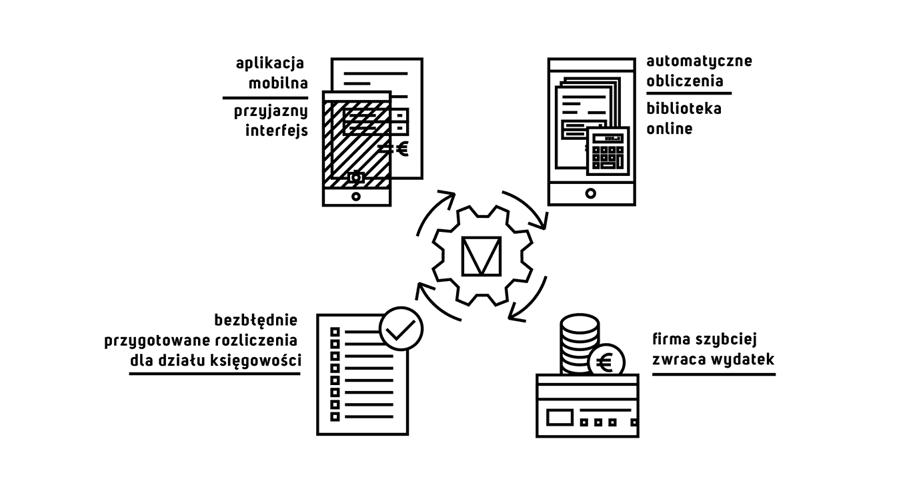

W każdej firmie pracownicy dokonują zakupów gotówkowych lub kartą płatniczą, które następnie muszą rozliczyć. W wielu firmach robią to nadal w Excelu! Aby uniknąć ryzyka zagubienia rachunków i konieczności przygotowania żmudnych rozliczeń stworzyliśmy aplikację, dzięki której wystarczy zrobić smartfonem zdjęcie i zapisać je do biblioteki, a rozliczenie automatycznie przygotuje się w naszym systemie. Dzięki naszemu rozwiązaniu pozbywasz się uciążliwego zbierania dokumentów i żmudnego wprowadzania danych. Dodatkowo, zawsze dostarczasz do działu księgowości poprawnie przygotowane rozliczenia a firma szybciej zwraca Ci poniesiony wydatek. Nasz system to:
